무선설비기사 (2010-05-02 기출문제)
1과목: 디지털 전자회로
1. 평활회로의 특성 중 L형 평활회로와 비교하여 C형 평활회로의 특성으로 틀린 것은?
- 직류 출력 전압이 높다.
- 시정수가 클수록 리플이 감소된다.
- 전압변동률이 작다.
- 고전압, 저전류 용도로 사용된다.
(정답률: 66%)

2. 다음 정전압 회로에 대한 설명으로 틀린 것은?
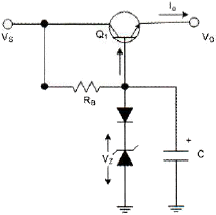
- 다이오드를 통하여 온도변화에 대해 안정하다.
- 캐패시터를 통하여 리플성분을 제거해 준다.
- 출력 전압(Vo)은 제너전압(Vz)에 순방향 전압을 더한 값이다.
- 동전위 정전압 회로이다.
(정답률: 82%)
3. 다음 그림과 같은 연산증폭 회로의 전압이득(Vo/Vs)은 얼마인가? (단, 증폭기는 이상적이라고 가정하며, R1=R2=R3=30[kΩ], R4=2[kΩ]이다.)
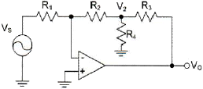
- -14
- -17
- -20
- -23
(정답률: 77%)
4. 그림과 같은 발진회로에서 200[kHz]의 발진주파수를 얻고자 한다. C1과 C2의 값이 0.001[μF]이라면 L의 값은 약 얼마인가?
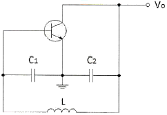
- 2.21[mH]
- 1.27[mH]
- 2.31[mH]
- 1.35[mH]
(정답률: 72%)
5. 그림과 같은 회로에 대한 설명 중 틀린 것은?
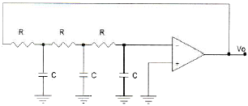
- 저주파 발진기의 일종이다.
- 회로의 전류증폭도는 29배 이사이어야 한다.
- 발진주파수
 [Hz]이다.
[Hz]이다. - 병렬용량형 이상형발진회로이다.
(정답률: 72%)
6. 진폭변조에서 80[%] 변조하였을 때, 상측파대의 전력은 반송파 전력의 몇 [%] 인가?
- 16[%]
- 32[%]
- 40[%]
- 48[%]
(정답률: 66%)
7. 디지털 복조에 대한 설명 중 틀린 것은?
- ASK에 대한 복조는 비동기식 포락선 검파만을 이용한다.
- 동기검파는 송신신호의 주파수와 위상에 동기된 국부발진 시호와 입력신호를 곱하게 하는 곱셈 검파기이다.
- 비동기식 포락선 검파방식은 PSK의 복조에는 이용되지 않는다.
- 비동기식 검파는 동기검파보다 시스템은 간단하지만 효율이 떨어진다.
(정답률: 77%)
8. QAM 변조방식은 디지털 신호의 전송효율 향상, 대역폭의 효율적 이용, 낮은 에러율, 복조의 용이성을 위해 어떤 변조 방식을 결합한 것인가?
- FSK+PSK
- ASK+PSK
- ASk+FSK
- QPSK+FSK
(정답률: 81%)
9. 펄스폭이 10[μs], 펄스 점유율이 50[%]인 펄스의 주파수는?
- 50[kHz]
- 20[kHz]
- 10[kHz]
- 5[kHz]
(정답률: 62%)
10. 슈미트 트리거 회로에 대한 설명 중 틀린 것은?
- 입력이 어느 레벨이 되면 비약하여 방형 파형을 발생시킨다.
- 입력 전압의 크기가 on, off 상태를 결정한다.
- 펄스 파형을 만드는 회로로 사용한다.
- 증폭기에 궤환을 걸어 입력신호의 진폭에 따른 1개의 안정 상태를 갖는 회로이다.
(정답률: 80%)
11. 그림과 같은 회로에 정현파 전압을 인가시켰을 때 출력측에 나타나는 파형은?
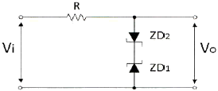
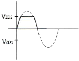
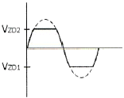
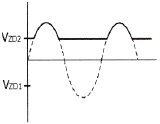
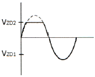
(정답률: 82%)
12. 8진수 (67)8을 16진수로 바르게 표기한 것은?
- (43)16
- (37)16
- (55)16
- (34)16
(정답률: 89%)
13. 다음 논리식을 최소화시킬 때 올바른 것은?
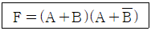
- A
- A+B
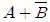
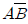
(정답률: 87%)
14. 그림의 회로에서 A=B=0이면 X1과 X2의 값은 b각각 얼마인가?
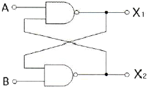
- X1 → 0, X2 → 0
- X1 → 0, X2 → 1
- X1 → 1, X2 → 0
- X1 → 1, X2 → 1
(정답률: 86%)
15. 다음 소자 중에서 n개의 입력을 받아서 제어 신호에 의해 그 중 1개만을 선택하여 출력하는 것은?
- Multiplexer
- Demultiplexer
- Encoder
- Decoder
(정답률: 87%)
16. 한 자리의 2진수 A, B를 입력으로 하여 출력
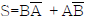
및 C=AB를 취할 수 있는 회로를 무엇이라고 하는가?- 적산기
- 반감산기
- 반가산기
- 감산기
(정답률: 84%)
17. 1의 보수기에 대한 설명으로 적합한 것은?
- 감산기를 이용하지 않고 감수의 보수를 이용하여 가산기만으로 뺄셈을 한다.
- 감수의 보수를 이용하지 않고 피감수의 보수를 이용하여 감산기만으로 뺄셈을 한다.
- 감산기를 이용하지 않고 피감수의 보수를 이용하여 가산기만으로 뺄셈을 한다.
- 피감수의 보수를 이용하여 감산기만으로 뺄셈을 한다.
(정답률: 79%)
18. 전원회로에서 맥동률에 대한 옳은 식은?
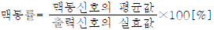
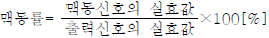
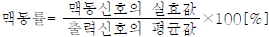
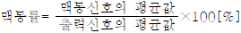
(정답률: 85%)
19. FET와 TR의 차이점 중 틀린 것은?
- FET는 TR보다 입력 저항이 크다.
- FET는 TR보다 동작속도가 빠르다.
- FET는 TR보다 잡음이 적다.
- TR은 양극성 소자이고 FET는 단극성 소자이다.
(정답률: 66%)
20. 다음 회로의 종류는?
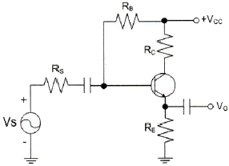
- 병렬전압부궤환
- 병렬전류부궤환
- 직렬전압부궤환
- 직렬전류부궤환
(정답률: 57%)
2과목: 무선통신 기기
21. 정보신호가 m(t)=cos(2π fmt)인 정현파를 반송파 fc를 사용하여 DSB-SC 변조하는 경우 변조된 신호의 스펙트럼으로 옳은 것은?
- fm, f-m, fc, f-c
- fc+fm, -fc-fm
- fc+fm, fc-fm, -fc+fm, -fc-fm
- fc+fm, fc, fc-fm, -fc+fm, -fc, -fc-fm
(정답률: 79%)
22. 상업용 FM 방송에서는 기저대역 신호의 대역을 15~30[kHz]로 하고, 최대 주파수 편이 Δf=75[kHz]로 제한하고 있다. 전송대역폭은 각 채널당 200[kHz]로 할당할 때, FM 방송에서 신호의 대역폭은 얼마인가?
- 150[kHz]
- 160[kHz]
- 180[kHz]
- 200[kHz]
(정답률: 86%)
23. 아래 그림과 같이 FM 변조기를 이용하여 FM 변조를 하고자 한다. 괄호에 들어갈 내용으로 적합한 것을 고르시오.
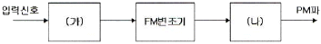
- (가) 없음 (나) 적분기
- (가) 적분기 (나) 없음
- (가) 없음 (나) 미분기
- (가) 미분기 (나) 없음)
(정답률: 85%)
24. FSK 신호의 전송속도가 120[bps]이면 보(baud) 속도는 얼마인가?(오류 신고가 접수된 문제입니다. 반드시 정답과 해설을 확인하시기 바랍니다.)
- 300[baud]
- 400[baud]
- 600[baud]
- 1200[baud]
(정답률: 87%)
25. 주파수 대역폭이 가장 좁은 통신방식은?
- FS 전신
- SSB 전화
- FM 전화
- TV
(정답률: 87%)
26. PSK 신호의 복조에 대한 설명으로 적합한 것은?
- PSK 복조에서는 DSB 검파기를 사용하여 양극성 NRZ 신호로 복조한다.
- PSK는 DSB 검파에 비동기식 방법을 사용할 수 있다.
- 동기식 PSK 복조는 동기식 FSK과 성능이 동일하다.
- FSK 복조 기술은 PSK의 복조에 그대로 적용할 수 있다.
(정답률: 78%)
27. QAM 신호의 baud rate가 1800이고 데이터 전송속도가 9000이라면, 하나의 심볼에 몇 개의 비트가 할당되어 있는가?
- 3
- 4
- 5
- 6
(정답률: 85%)
28. 다음 펄스식 레이더를 널리 사용하는 이유가 아닌 것은?
- 출력의 능률을 올릴 수 있다.
- 저주파로 이용할 수 있기 때문이다.
- 예민한 빔을 얻을 수 있어 방위 분해능을 높게 할 수 있다.
- 송신 펄스의 유지시간 내에 반사 펄스를 수시할 수 있어 상호 간섭이 없다.
(정답률: 77%)
29. 다음은 레이더의 장점을 설명한 것이다. 잘못된 것은?
- 야간이나 시계가 불량한 경우 레이더를 사용하면 안전한 항해를 할 수 있다.
- 거리와 방위를 구할 수 있으므로 목표물의 위치 및 상대속도 등을 구할 수 있다.
- 특수 레이더의 경우 강렬한 열대성 폭풍(태풍)의 위치와 강우의 이동 등 다양한 용도로 사용할 수 있다.
- 레이더는 연안항법에 비해 매우 정확하다.
(정답률: 82%)
30. 납 축전지의 구성으로 맞지 않는 것은?
- 양극판
- 염산액
- 음극판
- 전해액
(정답률: 89%)
31. 다음 중 충전의 종류가 아닌 것은?
- 중충전
- 초충전
- 평상충전
- 과충전
(정답률: 90%)
32. 다음은 UPS의 구성 방식을 설명한 것이다. 잘못된 것은?
- ON-LINE 방식 : 상용전원을 컨버터 회로에 의해 직류로 바꾸고 이를 축전지에 충전하고 인버터 회로를 통해 교류전원으로 바꾼다.
- Hybrid 방식 : 상용전원은 그대로 출력으로 내보내며 축전지는 충전회로를 통해 충전한다.
- LINE 인터랙티브 방식 : 축전지와 인버터 부분이 항상 접속되어 서로 전력을 변환하고 있다.
- OFF-LINE 방식 : 입력측의 변동된 전원이 부하측의 출력으로 공급되어 출력에 영향을 줄 수 있다.
(정답률: 78%)
33. 송신전력 10[W]는 몇 [dBm] 인가? (단, 송신전력이 1[mW]일 때 0[dBm]이다.)
- 40[dBm]
- 60[dBm]
- 80[dBm]
- 100[dBm]
(정답률: 89%)
34. 무선 전송 시스템에서의 페이드 마진(fade margin)을 측정하는데 필요하지 않은 것은?
- 무선 전송장치
- BER tester
- 멀티미터
- 컴퓨터 및 측정용 액세서리
(정답률: 70%)
35. 무선 전송 시스템에서의 BER 측정에 대한 설명 중 틀린 것은?
- 무선 전송로와 시스템의 전송품질을 확인하기 위한 방법으로 사용된다.
- 단방향 BER 측정과 루프백 BER 측정이 있다.
- 하드웨어 계측기인 BER tester를 이용하는 방법 및 소프트웨어 프로그램상으로 측정하는 방법이 있다.
- E1급을 이용하는 경우 24시간 측정하여 비트 에러가 없어야 한다.
(정답률: 71%)
36. 안테나의 실효고를 바르게 설명한 것은?
- 전류분포가 일정한 안테나 높이
- 복사전력이 가장 작은 안테나 높이
- 공전잡음이 가장 작은 안테나 높이
- 전압분포가 0이 되는 안테나 높이
(정답률: 86%)
37. 다음 중 급전선(선로)에 나타나는 정재파의 전류, 전압의 분포와 위상을 바르게 설명한 것은?
- 전류, 전압의 분포는 선로상 어디서나 같으며, 위상은 선로의 각 점에 따라 다르다.
- 전류, 전압의 분포는 선로상 어디서나 같으며, 위상도 선로의 어디서나 같다.
- 전류, 전압의 분포는 λ/2마다 최대와 최소가 있고, 위상은 선로의 각 점에 따라 다르다.
- 전류, 전압의 분포는 λ/2마다 최대와 최소가 있고, 위상은 선로의 어디서나 같다.
(정답률: 81%)
38. 슈퍼헤테로다인 수신기에 대한 설명 중 가장 적합하지 않은 것은?
- 슈퍼헤테로다인 수신기는 동조 증폭기의 중심 주파수를 특정 주파수에 고정시키고 수신된 전체 RF 스펙트럼을 이동시키면서 원하는 채널의 스펙트럼이 통과대역에 들어오게 하는 방식이다.
- 슈퍼헤테로다인 수신기의 고정된 주파수를 중간주파라고 하는데, 상요 AM 방송의 경우 455[kHz]로 고정되어 있다.
- 수신된 RF 신호는 가변 국부 발진기의 출력과 곱해짐으로써 주파수 천이된다. 이 과정에서 국부 발진기의 주파수를 조정하여 RF 스펙트럼 중 원하는 채널의 스펙트럼이 고정된 특성의 IF 증폭기의 대역폭 내에 들어오도록 한다.
- 슈퍼헤테로다인 수신기에서 영상 주파수는 채널의 잡음을 나타낸 것이다.
(정답률: 75%)
39. 수신기의 성능을 나타내는 요소 중 충실도란 무엇을 말하는가?
- 미약 전파 수신 능력
- 혼신 분리 제거 능력
- 원음 재생 능력
- 장시간 일정출력 유지 능력
(정답률: 81%)
40. 다음 회로에서 스위 off시 전압계의 지시치를 V1=22[V], 스위치 on시 전압계의 지시치를 V2=20[V]이라 하고, R은 10[Ω]이라 할 때 전지의 내부저항은 몇 [Ω] 인가? (단, 전압계의 내부저항은 아주 크고, 전류계의 내부저항은 아주 작다.)
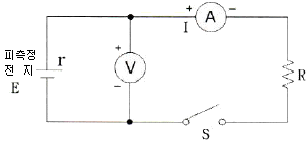
- 0.1[Ω]
- 0.5[Ω]
- 1[Ω]
- 2[Ω]
(정답률: 66%)
3과목: 안테나 공학
41. 극초단파(UHF) 주파수 범위에 대한 것 중 맞는 것은?
- 30~300[MHz]
- 300~3000[MHz]
- 3~30[GHz]
- 30~300[GHz]
(정답률: 80%)
42. 다음 중 전자파의 설명으로 옳지 않은 것은?
- 전계와 자계가 이루는 평면에 수직으로 진행하는 파
- 진동 방향에 평행인 방향으로 진행하는 파
- 전계와 자계가 서로 얽혀 도와가며 고리 모양으로 진행하는 파
- TE(횡전파), TM(횡자파), TEM(횡전자파)의 합성파
(정답률: 81%)
43. 다음 중 포인팅(Poynting) 벡터 P를 옳게 표현한 식은? (단, E는 전계의 세기, H는 자계의 세기이다.)
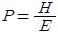
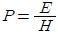
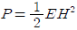
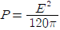
(정답률: 88%)
44. 전송선로의 인덕턴스가 2[μH/m], 커패시턴스가 50[pF/m]일 때 이 선로에 대한 위상속도는?
- 0.1×108[m/sec]
- 1×108[m/sec]
- 10×108[m/sec]
- 100×108[m/sec]
(정답률: 86%)
45. 급전선에서 진행파 전압을 Vf, 반사파 전압을 Vr라고 하면 전압정재파비 S는? (단, 반사계수
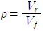
)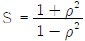
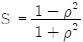
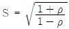
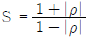
(정답률: 79%)
46. 선로1과 선로2의 결합부분에서 반사계수가 0.25이다. 이때 선로1의 길이는 15[m]이고 0.3[dB/m]의 손실을 가지며, 선로2의 길이는 10[m]이고 0.2[dB/m]의 손실을 가진다고 하면 결합부분에서의 총 손실은 약 몇 [dB] 인가?
- 6.2[dB]
- 6.4[dB]
- 6.6[dB]
- 6.8[dB]
(정답률: 49%)
47. 다음 중 마이크로파 전송로로 사용되는 도파관의 특성에 대한 설명으로 적합하지 않은 것은?
- 복사손실이 거의 없다.
- 외부 전자계와 격리시킬 수 있다.
- 저역 여파기로 작용을 한다.
- 표피 작용에 의한 저항 손실이 매우 작다.
(정답률: 83%)
48. 200[Ω] 및 800[Ω]의 선로를 1/4 파장의 선로인 임피던스 변성기로 정합하고자 한다. 삽입선로의 특성임피던스를 얼마로 해야 하나?
- 600[Ω]
- 500[Ω]
- 400[Ω]
- 300[Ω]
(정답률: 86%)
49. 길이 30[m]의 수직 공중선의 고유파장과 고유주파수는 얼마인가?
- λ: 120[m], f: 2,500[MHz]
- λ: 80[m], f: 3,750[MHz]
- λ: 120[m], f: 2,500[KHz]
- λ: 80[m], f: 3,750[KHz]
(정답률: 75%)
50. 다음 로딩(Loading) 다이폴 안테나의 설명에서 ( ) 안에 맞는 말을 순서대로 배열한 것은?
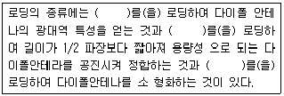
- 저항 - 인덕터 - 커패시터
- 인덕터 - 커패시터 - 저항
- 커패시터 - 저항 - 인덕터
- 커패시터 - 인덕터 - 저항
(정답률: 88%)
51. 기준 안테나의 실효면적이 Aes[m2 ]이고 어떤 안테나의 실효면적이 Ae[m2 ]일 때, 이 안테나의 상대이득은 어느 것인가?
- Aes / Ae
- Ae / Aes
- Aes × Ae
- Aes - Ae
(정답률: 49%)
52. 초단파대 이상 통신에 사용되는 안테나로 부적합한 것은?
- Rhombic Ant
- Horn Reflector Ant
- Parabola Ant
- Helical Ant
(정답률: 71%)
53. 다음 중 초단파 방송 송신용 안테나가 아닌 것은 어느 것인가?
- Top loading
- Turn stile
- Super Gain
- Super turn stile
(정답률: 65%)
54. 다음 중 소형ㆍ경량으로 부엽이 적고 이득이 높아 선박용 레이더 안테나로 가장 적합한 것은?
- 헬리컬 안테나
- 슬롯 어레이 안테나
- 혼 리플렉터 안테나
- 전자나팔 안테나
(정답률: 78%)
55. 지구등가 반경계수에 대한 설명 중 틀린 것은?
- 전파투시도를 그릴 때 고려되는 요소이다.
- 지구상의 어느 위치에서나 일정한 값을 갖는다.
- 실제 지구 반경에 대한 등가지구 반경의 비로 정의된다.
- 전파 가시거리에 영향을 미친다.
(정답률: 83%)
56. 지표면으로부터 높이 10[m]에 수평편파 송수신 안테나가 놓여 있다. 대지면을 완전도체라고 가정하는 경우, 송신 안테나에서 30[MHz]의 신호를 10[kW]에서 40[kW]로 증가시켜 송신할 때 20[km] 떨어진 수신 안테나 위치에서 전계강도의 변화는?
- 변화가 없다.
- √2배 증가한다.
- 2배 증가한다.
- 4배 증가한다.
(정답률: 86%)
57. 대기 중에서 비, 구름, 안개 등에 의한 전자파의 흡수 또는 산란 상태가 변화하기 때문에 발생하는 페이딩은?
- 신틸레이션 페이딩
- K형 페이딩
- 감쇠형 페이딩
- 산란형 페이딩
(정답률: 71%)
58. 페이딩 현상과 관련된 설명 중 틀린 것은?
- 두 개 이상의 전파가 서로 간섭을 일으켜 진폭 및 위상이 불규칙해지는 현상이다.
- 다중 경로 페이딩에 대한 대책으로 다이버시티가 활용된다.
- 직접파보다 간섭파가 우세할 경우 Rayleigh 페이딩으로 모델링한다.
- 다중 경로 페이딩 환경에서는 레이크 수신기는 적절하지 않다.
(정답률: 72%)
59. 100[MHz]의 신호를 송신 안테나를 통해 100[km] 떨어진 수신 안테나로 전송할 때 자유공간 전파 손실은 얼마인가?
- 92.45[dB]
- 102.45[dB]
- 112.45[dB]
- 122.45[dB]
(정답률: 69%)
60. 다음 중 잡음 방해의 개선방법으로 적합하지 않은 것은?
- 수신전력을 크게 한다.
- 수신기의 실효대역을 넓힌다.
- 인공잡음 발생을 경감시킨다.
- 적절한 통신방식을 선택한다.
(정답률: 78%)
4과목: 무선통신 시스템
61. 송신기에서 발사되는 고조파의 방사를 적게하기 위한 방법이 아닌 것은?
- 송신기 종단 동조회로의 Q를 될 수 있는 대로 낮게 한다.
- 종단과 공중선 사이에 결합회로(π)를 사용한다.
- 급전선에 고조파에 대한 Trap 회로를 설치한다.
- 여진 전압을 크게하지 않는다.
(정답률: 76%)
62. 전파의 창(Radio Window)의 범위를 결정하는 요소가 아닌 것은?
- 우주(대기) 잡음의 영향
- 대류권의 영향
- 도플러 효과의 영향
- 전리층의 영향
(정답률: 88%)
63. 무선 수신기의 특성 중 변조 내용을 수신기의 출력 측에서 어느 정도 재현할 수 있는가의 능력을 나타내는 것은?
- 충실도(Fidelity)
- 안정도(Stability)
- 선택도(Selectivity)
- 감도(Sensitivity)
(정답률: 92%)
64. 마이크로웨이브(micro wave) 통신에 대한 설명 중 틀린 것은?
- 사용주파수의 범위가 넓다.
- PTP(point to point) 통신이 가능하다.
- 중계없이 원거리 통신이 가능하다.
- 외부잡음의 영향이 적다.
(정답률: 87%)
65. 마이크로파 통신 시스템의 중계 방식에서 수신한 마이크로파를 중간 주파수로 변환하여 증폭을 행한 후 다시 마이크로파로 송신하는 방식은?
- 검파 중계 방식
- 직접 중계 방식
- 무급전 중계 방식
- 헤테로다인 중계 방식
(정답률: 69%)
66. 위성통신에서 지구국의 앙각에 대한 설명으로 잘못된 것은?
- 실제 지구국의 최소 앙각은 0°보다 크다.
- 앙각이 작을수록 우주에서의 대기감쇠는 더 커지게 된다.
- 앙각이 0°이면 신호가 미치는 범위는 넓어지게 된다.
- 하향링크를 위해서 FCC는 5°의 최소 앙각을 요구하고 있다.
(정답률: 60%)
67. 이동통신 환경에서 다중경로 페이딩을 경감시키는 방법이 아닌 것은?
- 적응 등화기
- 간섭제거 기술
- 도플러 확산
- 오류정정부호 기술
(정답률: 84%)
68. 이동전화 시스템에서 핸드오프(hand-off)의 기능이란?
- 이동전화 단말기와 기지국간의 통화종료를 의미한다.
- 이동전화 교환국과 기지국간의 정보전송 속도의 변경을 의미한다.
- 이동전화 단말기가 통화 중에 이동시 통화채널이 인접기지국에 자동전환되는 것을 의미한다.
- 발신과 착신의 신호송출 기능을 의미한다.
(정답률: 94%)
69. 다음 중 DSSS(Direct Sequence Spread Spectrum)에서 사용하는 직교 코드 부호의 특징으로 틀린 것은 무엇인가?
- 각 부호 사이의 상호 상관관계는 1이 되어야 한다.
- 직교 부호 집합내의 각 부호는 1과 -1의 수가 같아야 한다.
- 부호는 랜덤한 특성을 가져야 한다.
- 각 부호에 대하여 각 부호의 차수로 나눈 내적(dot product)은 1이 되어야 한다.
(정답률: 55%)
70. 4세대 이동통신 시스템이 효율성과 차별성을 위해 고려하고 있지 않는 것은?
- 셀 커버리지 증대
- 주파수 효율성
- 전송율 최적화
- 좁은 대역폭 추구
(정답률: 83%)
71. 다음 중 W-CDMA 시스템에서 사용하지 않는 방법은?
- TDD
- FDD
- FDMA
- CDMA
(정답률: 57%)
72. 다음의 설명에 해당되는 프로토콜 요소는 어느 것인가?
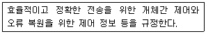
- 의미(semantics)
- 구문(syntax)
- 순서(timing)
- 연결(connection)
(정답률: 79%)
73. 다음 중 하위 계층을 사용하여 응용 프로그램간의 통신에 대한 제어 기능을 수행하며, 상호 대응하는 응용 프로그램 간의 연결의 개시, 관리, 종결을 담당하는 계층은?
- 응용 계층
- 표현 계층
- 세션 계층
- 전달 계층
(정답률: 74%)
74. 대역폭이 1[MHz]이고 실내온도가 17[℃]일 때, 잡음전력은 몇 [dBm] 인가? (단, k=1.38×10-23 [J/deg]이다.)
- -104[dBm]
- -114[dBm]
- -124[dBm]
- -134[dBm]
(정답률: 48%)
75. 중ㆍ장파 대역이 지표파에 의해 전파되는 과정에서 다음 중 어디에서 가장 감쇠가 많이 일어나는가?
- 강, 호수
- 바다
- 습지
- 사막
(정답률: 90%)
76. 무선통신시스템의 유지보수 기능에 해당되지 않는 것은?
- 무선통신망 보안관리 기능
- 무선통신망 상태관리 기능
- 무선통신망 고장관리 기능
- 무선통신망 고객관리 기능
(정답률: 88%)
77. 이동무선전화 시스템의 기지국(BTS)이 수행하는 기능이 아닌 것은? (문제 오류로 실제 시험에서는 3, 4번이 정답처리 되었습니다. 여기서는 3번을 누르면 정답 처리 됩니다.)
- 단말기의 무선접속 기능 수행
- 단말기의 동기 유지
- 통화채널 할당/해제
- 단말기의 위치 추적
(정답률: 83%)
78. HSDPA 시스템에서 HARQ(Hybrid ARQ)- ACK(Acknowledgement) 정보와 CQI(Channel Quality Indicator) 정보를 전송하는 채널은?
- F-DCH(Fractional DCH)
- HS-DPCCH(High Speed-Dedicated Physical Control Channel)
- HS-PDSCH(High Speed-Physical Downlink Shared Channel)
- HS-SCCH(High Speed-Shared Control Channel)
(정답률: 68%)
79. 무선 근거리통신망의 ISM 대역에 대한 설명으로 적합하지 않은 것은?
- ISM 대역은 ITU에서 국제적으로 지정하였다.
- 산업ㆍ인력ㆍ의료 대역이라 불리우는 주파수 대역이다.
- ISM 대역을 사용하기 위해서는 별도의 무선국 허가절차가 필요하다.
- 우리나라가 해당하는 제3지역에서는 2.4~2.5[GHz]등 10여개 대역이 지정되어 있다.
(정답률: 83%)
80. 다음 중 WPA(Wi-Fi Protected Access)의 요소가 아닌 것은?
- TKIP
- MIC
- 802.1X
- WEP
(정답률: 84%)
5과목: 전자계산기 일반 및 무선설비기준
81. 0-주소 명령어(zero-address instruction)에서 사용하는 특정한 기억장치 조직은 무엇인가?
- 그래프(graph)
- 스택(stack)
- 큐(queue)
- 트리(tree)
(정답률: 91%)
82. 동적 RAM(Dynamic RAM)의 특징이 아닌 것은 어느 것인가?
- 전하의 양을 측정하여 저장 논리값을 판단한다.
- 전하의 방전 때문에 주기적으로 재충전(refresh) 해야 한다.
- 1비트를 구성하는 소자가 적어서 단위 면적에 많은 저장장소를 만들 수 있다.
- 1비트를 구성하는 소자가 적어서 메모리 액세스 속도가 정적 RAM(Static RAM)보다 빠르다.
(정답률: 80%)
83. 다음 산술식에 대하여 후위 순회(postorder traversal)를 한 결과는 어느 것인가?
- + * * /A B C D E
- + A /* * B C D E
- A B C * D * E /+
- A B C D E * * /+
(정답률: 73%)
84. 다음의 트리에 대하여 잘못된 것은 어느 것인가?
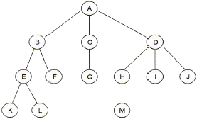
- 트리의 단말노드 집합={K, L, F, G, M, I, J}
- 노드 B의 차수(degree)는 2이다.
- 트리의 차수(degree)는 4이다.
- 노드 H, I, J는 형제(sibling) 관계이다.
(정답률: 77%)
85. 다음 중 큐(queue)의 구조에 해당하지 않는 것은 무엇인가?
- 줄서기에 의한 화장실 사용순서
- 자동판매기의 종이컵의 배출순서
- 은행에서의 대기 순서표 뽑기 및 이용순서
- 주방에서의 씻어 놓은 접시 사용하는 순서
(정답률: 83%)
86. 다음 보기에 해당하는 디스크 스케줄링 기법은?
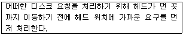
- 선입 선처리 스케줄링(First Come First Served)
- 최소 탐색 우선 스케줄링(Shortest Seek Time First)
- 주사(Scan) 스케줄링
- 순환주사(Circular Scan) 스케줄링
(정답률: 85%)
87. 마이크로프로세서의 구성요소 중에 하나로, CPU와 각 장치들 간에 정보를 교환하기 위한 전송로로서 사용되는 이것을 부르는 용어는?
- 회로
- 전송선
- 전선
- 버스
(정답률: 83%)
88. 중파방송의 경우 블랭킷에어리어는 지상파의 전계강도가 미터마다 몇 볼트 이상인 지역을 말하는가?
- 10볼트
- 5볼트
- 3볼트
- 1볼트
(정답률: 70%)
89. 방송통신위원회가 전파자원을 확보하기 위하여 시책의 마련 및 시행하는 사항과 가장 거리가 먼 것은?
- 주파수의 국제등록
- 이용중인 주파수의 이용효율 향상
- 국가 간 전파혼신의 해소와 이의 방지를 위한 협의ㆍ조정
- 국가 간 무선국 현황 파악 및 통계조사
(정답률: 78%)
90. 신고로서 무선국 개설이 가능한 경우가 아닌 것은?
- 형식등록을 받은 무선설비를 사용하는 아마추어 무선국
- 발사하는 전파가 미약한 무선국 또는 무선설비의 설치공사가 필요없는 무선국
- 수신전용의 무선국
- 대가에 의한 주파수할당 규정에 의하여 주파수할당을 받은 자가 전기통신역무 등을 제공하기 위하여 개설하는 무선국
(정답률: 64%)
91. 전자파장해기기 또는 전자파로부터 영향을 받는 기기를 제작 또는 수입하고자 하는 자는 어떠한 절차를 밟아야 하는가?
- 형식승인
- 형식검정이나 형식등록
- 전자파강도측정
- 전자파적합등록
(정답률: 72%)
92. 전파법에 따라 기기의 인증에 관한 사항의 이행여부를 조사 또는 시험하는 행위는 다음 중 어느 것에 해당하는가?
- 사전관리
- 사후관리
- 인증관리
- 기기관리
(정답률: 66%)
93. 기본모델과 전기적인 회로ㆍ구조ㆍ성능이 동일하고 그 부가적인 기능만을 변경한 기기를 정의하는 용어로 옳은 것은?
- 기본모델
- 변경모델
- 동일모델
- 파생모델
(정답률: 84%)
94. 535[kHz] 초과 1606.5[kHz] 이하의 주파수를 사용하는 방송국의 주파수 허용편차는?
- 10[Hz]
- 20[Hz]
- 100[Hz]
- 200[Hz]
(정답률: 70%)
95. 공중선에 공급되는 전력과 등방성 공중선에 대한 임의의 방향에 있어서의 공중선 이득의 곱을 의미하는 전력은?
- 반송파전력(PZ)
- 등가등방복사전력(EIRP)
- 규격전력(PR)
- 평균전력(PY)
(정답률: 89%)
96. F8E, F9W, F9E 전파형식을 사용하는 초단파 방송국의 무선설비 점유주파수대폭의 허용치는?
- 260[kHz]
- 500[kHz]
- 1.32[MHz]
- 6[MHz]
(정답률: 49%)
97. 32비트의 데이터에서 단일 비트 오류를 정정하려고 한다. 해밍 오류 정정 코드(Hamming error correction code)를 사용한다면 몇 개의 검사 비트들이 필요한가?
- 4비트
- 5비트
- 6비트
- 7비트
(정답률: 68%)
98. 다음 10진수 코드 중 자체보수화(self complementing)가 가능한 코드가 아닌 것은?
- 2 4 2 1 코드
- 8 4 2 1 코드
- 8 4 2 1 코드
- Excess-3 코드
(정답률: 45%)
99. 운영체제에서 폴더와 파일들은 어떤 구조로 구성되어 있는가?
- 트리(tree)
- 큐(queue)
- 스택(stack)
- 배열(array)
(정답률: 76%)
100. 다음 중 마이크로컴퓨터의 구성요소가 아닌 것은?
- 마이크로프로세서
- 운영체제
- 입출력 인터페이스
- 입출력기기
(정답률: 52%)